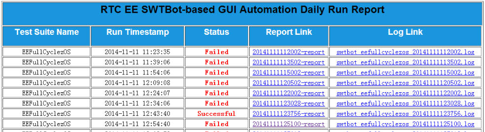

Python中range和xrange区别
所有Python的学习者都会遇到这个问题，range和xrange都可以是列表生成器，它们有什么区别？
range
函数说明：range([start,] stop[, step])，根据start与stop指定的范围以及step设定的步长，生成一个序列。range一上来就直接开辟一大块内存，返回一个完整list对象。
xrange
函数说明：用法与range完全相同，所不同的是生成的不是一个list对象，而是一个生成器，在每次调用时返回其中的一个值。
所以显而易见，除非你真的是想一次性返回整个列表，否则，在循环中，xrange的性能要大大优于range，特别是列表很大或者内存吃紧的时候，所以，循环中请尽量用xrange.
more ...解决Python往文件中插入多行字符串时的一个小问题
用Apache搭了一个最简单的Http服务器，每一次自动化脚本跑完之后要往http服务器的首页insert一条记录。
截图：

往Html源文件插入一行的代码如下所示：
def modify_index_html(apache_dir, log_path):
"""
Function:Update the index.html to reflect the run result to the overall report
@apache_dir: Apache http server folder:"C:\\Program Files (x86)\\Apache Software Foundation\\Apache2.2\\htdocs\\"
@log_path: the path to the log generated in this run
"""
logger.info("Updating ...Python做自动化项目的总结
最近项目上有自动化要求，我选择了用Python，对自己的代码能力提高很有帮助。
- 第一：学东西最快最有效的方法是“用起来”。
- 第二：通过将实际问题细分力度，用Python逐一解决，这样学到的知识掌握的深。
- 第三：不要忘了归纳总结，网上信息泛滥，有个地方能记录你的学习进度和学习心得，对IT从业人员是必要的技能。
心灵鸡汤说完了，这里我记录一下这次项目中用到的Python知识点和重点。
Python如何中途退出一个函数？
sys.exit(0)
Python如何判断文件(夹)存在?
os.path.exists(root_dir)
Python如何改变目录?
os.chdir(new_path)
Python如何延时？
time.sleep(30)
Python如何执行系统命令？
os.system('mycommand.bat')
Python如何判断文件扩展名？
file.endswith(".html")
Python如何删除一个文件夹?
shutil.rmtree(file_path, True ...